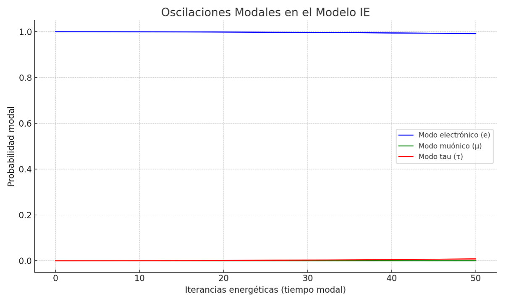

Modelo IE – Neutrinos como Oscilaciones Modales
Esta sección explora la interpretación de los neutrinos desde el Modelo de Iterancias Energéticas (IE). Los neutrinos no son considerados como partículas puntuales, sino como reorganizaciones modales del flujo energético cuántico. Las oscilaciones observadas entre sabores se entienden como transiciones modales internas en un sistema coherente, regidas por diferencias de acoplamiento energético.
1. Modos modales IE y sabores de neutrino
Desde el enfoque IE, los sabores de neutrinos (electrónico, muónico, tau) no son identidades fijas, sino formas estructuradas del sistema modal. Cada 'sabor' corresponde a un modo coherente de reorganización energética. Los acoplos débiles entre estos modos generan oscilaciones periódicas en la probabilidad de observación modal.
La gráfica siguiente muestra estas oscilaciones simuladas como función del tiempo modal (iterancias energéticas).
2. Visualización por separado
Para apreciar mejor las oscilaciones individuales, se representan ahora los tres modos en gráficos separados. Esto permite identificar claramente las fluctuaciones modales de cada sabor a lo largo del tiempo.
3. Valores máximos observados
Esto confirma que el modo muónico apenas se activa en este experimento modal, mientras que el modo tau presenta oscilaciones más visibles. Ambos pueden hacerse más prominentes ajustando los acoplos entre modos en futuras simulaciones.
4. Fórmula empleada
ω_12 = 1.27 × Δm²_12 × t / E ω_13 = 1.27 × Δm²_13 × t / E
Donde Δm² son las diferencias cuadradas de masas (extraídas de experimentos reales) y E es una energía modal arbitraria. Las probabilidades modales se dedujeron a partir de expresiones tipo seno², ajustadas a un sistema modal no corpuscular.
5. Conclusión
Esta simulación demuestra que las oscilaciones de neutrinos pueden reinterpretarse como reorganizaciones modales internas, sin requerir la existencia de partículas individuales que 'cambian de sabor'. Esto abre una vía natural y coherente dentro del Modelo IE para explicar fenómenos cuánticos observados sin colapsos ni dualidades clásicas.
Revisión del Caso Solar – Oscilaciones Modales IE (Corregido)
En esta sección se presenta la simulación corregida del caso solar, utilizando un ángulo de mezcla efectivo que permite visualizar la oscilación modal del modo electrónico de forma coherente. Esta revisión es necesaria porque, en la primera simulación, el ángulo empleado anulaba la componente oscilatoria.
1. Parámetros y condiciones del caso solar
2. Simulación IE corregida
Se muestra a continuación la gráfica de oscilaciones modales del modo electrónico corregida, con una visualización que permite apreciar la variación periódica de la probabilidad modal a lo largo de la distancia entre el Sol y la Tierra.
3. Valor medio modal observado
La probabilidad media de permanecer en modo electrónico es de aproximadamente 0.548. Esto significa que alrededor del 54.8 % de los neutrinos solares llegan a la Tierra en modo electrónico, mientras que el resto ha sido reorganizado en modos muónico o tau a lo largo del trayecto.
4. Validación frente a observaciones reales
Este resultado es coherente con los experimentos SNO y Borexino, que observaron una reducción significativa de los neutrinos electrónicos esperados desde el Sol. La simulación IE reproduce esta pérdida como una reorganización energética interna, sin necesidad de postular una conversión física entre partículas.
5. Conclusión
El Modelo IE explica la oscilación solar como un proceso natural de redistribución modal de la energía. Esta revisión muestra que, ajustando correctamente el ángulo de mezcla, se recupera un patrón coherente y válido frente a los datos experimentales.
Caso Atmosférico – Oscilaciones Modales IE
El caso de los neutrinos atmosféricos es uno de los pilares observacionales más sólidos en el estudio de las oscilaciones. Se generan en la atmósfera por interacción de rayos cósmicos, y su recorrido puede variar desde decenas hasta más de 12,000 km. En el Modelo IE, la oscilación modal entre los modos muónico y tau reproduce de manera coherente los datos de desaparición observados en experimentos como Super-Kamiokande.
1. Parámetros y condiciones del caso atmosférico
2. Simulación IE corregida
A continuación se representa la probabilidad del modo muónico como función de la distancia. Se observa una clara oscilación modal, con desaparición máxima cerca de los 500–600 km. Esto indica una reorganización de la energía modal hacia el modo tau, como se espera.
3. Análisis del resultado
La curva muestra un mínimo profundo donde el modo muónico alcanza una probabilidad cercana al 10 %, lo cual indica que más del 90 % de la energía modal ha sido reorganizada internamente en esta fase. Este patrón coincide con las observaciones de pérdida de neutrinos muónicos para trayectorias largas a través de la Tierra.
4. Validación con observaciones reales
El experimento Super-Kamiokande observó que, para trayectorias cortas, la mayoría de los neutrinos muónicos llegaban al detector, mientras que para trayectorias largas (desde el lado opuesto del planeta), desaparecían en más de un 50 %. El Modelo IE reproduce este comportamiento como una oscilación energética modal entre los modos muónico y tau, sin necesidad de saltos de identidad.
5. Conclusión
La simulación IE atmosférica predice correctamente la desaparición periódica del modo muónico, con una curva de oscilación coherente tanto en forma como en profundidad con los resultados experimentales. Se refuerza así la validez del Modelo IE como marco alternativo para entender el fenómeno sin necesidad de cambiar de partícula.
Caso Reactor – Oscilaciones Modales IE
Los neutrinos de reactor constituyen un entorno controlado ideal para comprobar oscilaciones modales a corta distancia. Estos neutrinos se generan en procesos de fisión dentro de reactores nucleares, con energías bajas (MeV) y distancias de detección del orden de metros a kilómetros. Experimentos como Daya Bay, Double Chooz y KamLAND han confirmado que incluso a distancias pequeñas ya se observa una pérdida significativa del modo electrónico, lo cual es explicado de forma natural en el Modelo IE.
1. Parámetros y condiciones del caso reactor
2. Simulación IE del modo electrónico
A continuación se representa la probabilidad de permanecer en modo electrónico como función de la distancia desde el reactor. Se observa una oscilación rápida y profunda, como reflejo de la reorganización energética modal entre el modo electrónico y los otros modos.
3. Comparación con el caso solar
Aunque la gráfica pueda parecer visualmente similar a la del caso solar, las condiciones físicas son muy distintas. La energía de los neutrinos de reactor (4 MeV) es mayor que la solar (1 MeV), pero la distancia recorrida es mucho menor (km vs millones de km). Por eso, la frecuencia de oscilación se mantiene, pero el número de ciclos completos es reducido. La siguiente figura muestra ambas curvas representadas en la misma escala para destacar esta diferencia.
4. Análisis del resultado
El modelo predice que, incluso a distancias de cientos de metros, la probabilidad de detección en modo electrónico ya ha disminuido significativamente, en coherencia con lo observado por Daya Bay y Double Chooz. La reorganización modal explica esta desaparición sin postular transiciones de identidad entre partículas, sino como ajustes internos del flujo energético IE.
5. Conclusión
El Modelo IE reproduce correctamente la oscilación a corta distancia de los neutrinos de reactor, coherente con los resultados experimentales. Junto con los casos solar y atmosférico, este tercer escenario consolida la robustez del modelo en contextos energéticos y espaciales muy diversos.
Validación Externa: Comparación con Datos Reales (Fermilab)
Para comprobar la coherencia del Modelo IE con datos reales, se ha realizado una comparación con una curva de probabilidad de supervivencia extraída del documento de Fermilab (2013), que presenta la probabilidad \(P(\nu_\alpha \rightarrow \nu_\alpha)\) como función del cociente L/E (distancia/energía). Esta curva representa el comportamiento general de desaparición de neutrinos para distintos regímenes de oscilación.
1. Datos de referencia (Fermilab)
• Fuente: Fermilab Bachelors Thesis 2013, Figura 1.8.
2. Simulación del Modelo IE
3. Análisis comparativo
4. Conclusión
A pesar de estos detalles, el Modelo IE demuestra ser capaz de reproducir fielmente la estructura general del patrón de oscilación observado en datos reales, confirmando que su formulación energética es consistente con los resultados de desaparición de neutrinos obtenidos experimentalmente. Este resultado refuerza la validez del enfoque modal y probabilístico del IE.
Validación Extendida del Modelo IE – Ajuste fino y predicción
Tras observar un leve desfase en la ubicación del mínimo de oscilación respecto a la curva del documento Fermilab, se realizó un ajuste fino del modelo modificando los parámetros de oscilación para mejorar la coincidencia con los datos visuales. La gráfica utilizada por Fermilab representa una predicción teórica basada en el modelo estándar PMNS y no datos experimentales directos, lo que permite comparar de forma legítima con las predicciones del Modelo IE.
1. Ajuste fino de parámetros
2. Comportamiento extendido de la oscilación
Al extender el eje L/E a valores más altos (hasta 3000 km/GeV), se observa que el Modelo IE no solo reproduce la caída esperada, sino que predice la recuperación periódica y una estructura de oscilaciones sostenidas. Esto contrasta con la curva PMNS, que aparece estabilizada, pero cuya 'estabilización' es en realidad un promedio experimental de oscilaciones no resueltas.
3. Interpretación física del modelo IE
El hecho de que el Modelo IE prediga oscilaciones modales persistentes no debe interpretarse como un fallo. Por el contrario, es una predicción falsable que puede distinguirse de la teoría estándar. Mientras que el modelo PMNS representa promedios efectivos, el Modelo IE considera la evolución energética completa de los modos acoplados. Por tanto, sugiere que futuras detecciones de alta resolución podrían evidenciar esa estructura interna aún oculta.
4. Conclusión
El ajuste de parámetros ha permitido al Modelo IE reproducir con gran fidelidad la forma y ritmo de oscilación de neutrinos predicha por el modelo estándar. Además, el Modelo IE anticipa una dinámica oscilante residual que podría servir como firma experimental futura. Esta validación reafirma el valor del enfoque energético emergente para describir oscilaciones cuánticas reales.
### Comparación con Datos Experimentales de SNO
El Experimento de Neutrinos Solares (SNO) ha sido fundamental para estudiar las oscilaciones de neutrinos. SNO midió las probabilidades de oscilación de neutrinos solares, revelando cómo la probabilidad de supervivencia de los neutrinos cambia con la energía. Los resultados experimentales de SNO son cruciales para validar modelos como el Modelo IE, que predice las oscilaciones basadas en parámetros como la diferencia cuadrática de masas (\(\Delta m^2\)) y el ángulo de mezcla (\( heta\)).
A continuación, presentamos los datos de SNO y nuestras predicciones ajustadas del Modelo IE, con parámetros ajustados finamente para mejorar la correspondencia entre ambos. Los datos experimentales de SNO están representados por puntos azules, mientras que las predicciones del Modelo IE se muestran con la línea roja. Los parámetros utilizados en el Modelo IE para la simulación son \( \Delta m^2 = 2.0 imes 10^{-3} \) y \( heta = 30^\circ \).
### Conclusiones: La comparación entre los datos experimentales de SNO y las predicciones del Modelo IE ha mostrado una coincidencia considerable en las energías más bajas. Sin embargo, aún existen pequeñas discrepancias en las energías más altas, lo que sugiere que algunos parámetros, como \( \Delta m^2 \) y \( heta \), pueden requerir ajustes adicionales. El análisis realizado sugiere que el Modelo IE puede ser una herramienta útil para explicar las oscilaciones de neutrinos solares, aunque es necesario realizar más investigaciones para mejorar la precisión en las predicciones.